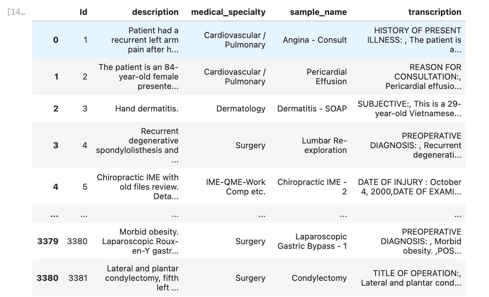
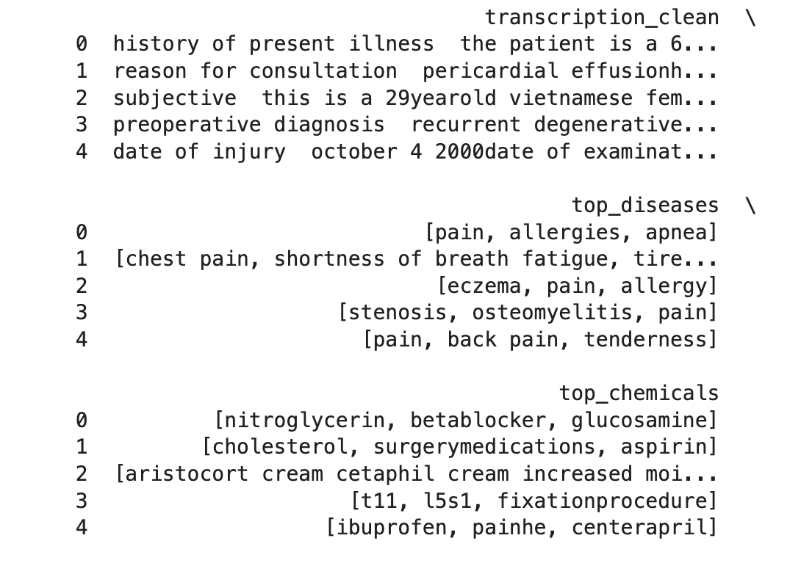

Named Entity Recognition (NER) is a Natural Language Processing (NLP) technique used to identify and classify key pieces of information (entities) within text. The goal of NER is to locate specific words or phrases in a text and label them as belonging to certain predefined categories.
Named Entities are specific pieces of information in the text, such as:
NER not only detects entities but also categorizes them. For example, the word "Tesla" might be classified as an "Organization" or "Product," depending on the context.
EMR data refers to the digital version of a patient's paper medical chart. It contains comprehensive health-related information about a patient, which is collected and maintained by healthcare providers over time. EMR data plays a crucial role in healthcare delivery, analytics, and research.
I am using an EMR data from kaggle website, the data is like below:
The original dataset has 3384 rows and 5 columns.
Two columns description and transcripton were processed with data cleaning, special characters and numbers were removed, all letters were lowered cased.
Spacy is a popular library for Natural Language Processing (NLP).
It provides tools for tokenization, part-of-speech tagging, dependency parsing,
and named entity recognition (NER).
The spaCy pipeline Tokenizes the text into words. Applies the NER model to classify phrases
or words into entity categories.The pre-trained model en_ner_bc5cdr_md is trained on biomedical
text, so it specializes in identifying entities like diseases or chemicals.
In this study, the top 3 name entities of diseases and chemicals for each transcripton are extracted.
The final output is like below:

If we know the diagnosis for some records, we could predict the unknown diagnosis based on the name entities like diseases and chemicals.